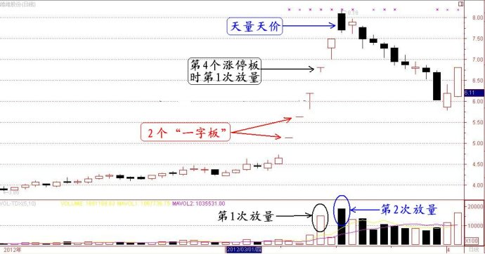
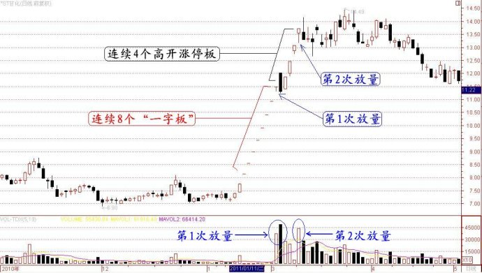

第198篇•教你炒股系列54:主升浪的形态（5）
谷为陵
（2）
“一字板+涨停板”型主升浪
前几天我讲了连续涨停板主升浪中的“一字板”主升浪，今天讲讲连续涨停板主升浪中的“一字板+涨停板”型主升浪。
所谓“一字板+涨停板”型主升浪，是指连续2～3个“一字板”再加2～3个高开大阳线涨停板型主升浪。其特点是；股价先启动2～3个“一字板”，但在其后的2～3个交易日，股价没有能力以涨停板开盘，但还是能够在高开后以涨停板收盘，该型主升浪也可以走出总计5～6个涨停板。
“一字板+涨停板”型主升浪是我们前面所讲的“一字板”型主升浪的变体，两者有相同之处，也有不同之处。
其相同之处有二：一是成因相同，两者皆因“个股突发性的特大利好”而启动一轮主升浪；二是两者在前面的2～3个“一字板”的走势完全相同。
其不同之处也有两点：一是主升浪的后期形态不同。“一字板”型主升浪能够连续走出5～6个“一字板”，而“一字板+涨停板”型只能走出2～3个“一字板”，其后只能走出高开涨停板。二是放量情况不同。“一字板”型主升浪只放一次量，一般是在最后一个“一字板”打开时放出巨量，甚至是天量，同时股价也见到短期的最高点，呈现较为标准的“天量天价”形态。但“一字板+涨停板”型主升浪一般要放两次量——第1次放量通常是在第4个高开涨停板那天，第2次放量是在主升浪最高点的那天。
“一字板”型主升浪是主升浪的最强形态，而“一字板+涨停板”型主升浪则是主升浪的次强形态。后者之所以弱于前者，若对照上文“一字板”型主升浪形成的四个条件，那么，就有相应的四个可能的原因：一是题材力度相对弱；二是股价高，或者总市值大；三是股价比价效应不强；四是前期涨幅较大。
我下面举几个“一字板+涨停板”型主升浪案例：
案例1：维维股份
今年3月9日，维维股份因公告收购贵州醇而出现了一轮大涨，该轮大涨是以“一字板”方式启动的，且连续走出了2个无量“一字板”。至第4个涨停板时，该股虽然还是以涨停板开盘，但在盘中涨停板数次被打开，且放出巨量，可以认为该股的上涨模式已经从“一字板”转为了高开涨停板。至第6个交易日时，该股在高开8%后，就快速回调，走出了一根巨量高开大阴线，并最终出现了短期的“天量天价”。

维维股份之所以在第4个涨停板放量，改变了“一字板”主升浪的模式，我认为主要有两个原因：一是该股的题材有点虚，虽然涉足白酒行业，但贵州醇只有区区几千万元的盈利能力，对于总股本高达16.7亿股的维维股份来说，业绩撬动作用微乎其微，该题材应该属于概念性的。二是因为该股流通盘很大，公众流通股高达7亿股，连续“一字板”难度很大。
现在要反过来问一个问题，既然该股题材有点虚，且公众流通股巨大，为什么还能走出包括2个“一字板”的共计5个涨停板的强势呢？我认为有两个原因：一是因为该股股价处于底部，且绝对股价只有4元多，沾了白酒这个热门题材就飞起来了，可见，对于超跌低价股来说，只要“给点阳光就灿烂”。二是该股一直有大资金操作，这次又在借题发挥。
案例2：*ST甘化（000576）
2011年2月15日，*ST甘化股价因其大股东德力西集团拟通过增发，向*ST甘化注资7亿元投资LED项目，从而使该股启动了一轮“一字板+涨停板”型主升浪。该股先是连续走出了8个5%的“一字板”（大致相当于4个10%的涨停板），其后股价休整了一天，又继续走出了4个高开5%的涨停板。在这轮主升浪中，该股也经过了两次放量的过程，如下图所示：

我们来分析一下*ST甘化这轮“一字板+涨停板”型主升浪的特点。
首先，我们来看看为什么该股能够走出这么强势的主升浪。若对照上文“一字板”型主升浪形成的四个条件，那么，我们可以看出*ST甘化具有启动“一字板+涨停板”型主升浪的条件：其一，从题材上看，LED题材是当时市场最热门的概念之一，因为LED龙头股三安光电的股价自2008年底至2011年3月上涨超过20倍，且股价正处于50元（不复权）的历史最高点附近，*ST甘化拟投巨资涉足LED行业，可被认为是个重大利好。其二，*ST甘化股价在上涨前只有7元多，属于低价股。其三，*ST甘化7元多的股价与三安光电50元的股价相比，差值巨大，比价效应明显。其四，*ST甘化前期股价没有上涨，处于横盘状态。
其次，我们再来分析一下，为什么*ST甘化的这轮主升浪不能够“一字板”到顶，而是要分为 “一字板”与
“高开涨停板”这两段上涨呢？我认为主要还是因该股的利好题材的力度有限，因为该股的LED项目的投资期长达3年以上，并不能为*ST甘化带来现实的收益，所以，这个题材本质上属于概念型题材，这就使得追涨盘在连续8个“一字板”后，变得有点胆怯和犹豫了，而获利盘也开始了获利了结，多空双方在第8个涨停板展开了激战。经过两天的放量换手，基本上消化了获利盘。而新资金之所以敢于在第8个“一字板”进场扫货，主要还是因为此时该股股价还只有11元多，与三安光电50元的股价相比，还是有较大的“比价”上涨空间，对这些资金还有一定的吸引力。但当该股连续上涨到14元时，该股缺乏投资价值的缺陷就开始对股价的上涨发挥出越来越大的制约作用，导致该股股价遇到的阻力越来越大，加之自2011年4月后，股市开始了新的一轮下跌，使得该股股价在14元始终无法突破，并最终做出了一个大顶。现在回头来看，该股的那一轮主升浪是典型的一浪到顶的主升浪。
所以，对于因“个股突发性的特大利好”而以“一字板”方式启动的主升浪，在操作方面，确实有很多课题需要深入研究。其中，有两个基本问题亟待解决：一是主升浪的高度该怎样预测？二是主升浪的买点在哪里？或者更准确的说，什么时候是第一次买点？关于这些，我将在后面阐述。
（未完待续）